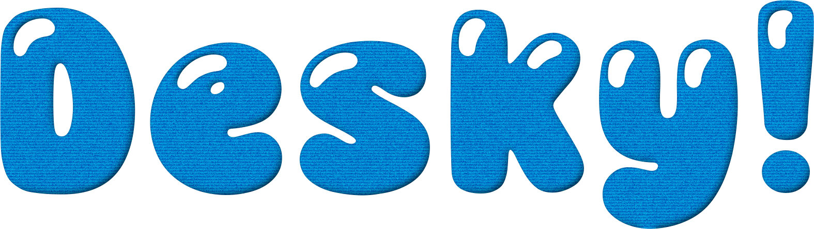

Un petit robot qui vit sur votre bureau. Il remarque ce que vous faites et s'ennuie si on l'oublie. On le nourrit, on le lave, on joue avec lui. Chaque robot est unique : le vôtre est tiré à sa première ouverture.
Windows affichera un avertissement à l'installation
L'installateur n'est pas signé par un certificat commercial — ils coûtent plusieurs centaines d'euros par an, et Desky est gratuit. Windows affiche donc « Windows a protégé votre ordinateur » pour tout programme qu'il ne reconnaît pas encore.
- Cliquez sur Informations complémentaires.
- Puis sur Exécuter quand même.
Chaque version est publiée avec son empreinte SHA‑256 et une attestation de provenance Sigstore. Elles garantissent que le fichier vient bien du dépôt public, construit à partir du commit annoncé — et vous pouvez le vérifier vous‑même en deux commandes :
Get-FileHash .\Desky-0.13.0-setup.exe -Algorithm SHA256
gh attestation verify .\Desky-0.13.0-setup.exe --repo HyroHyKen/Desky
L'empreinte attendue est dans SHA256SUMS.txt, à côté de
l'installateur sur la
page
de la version.